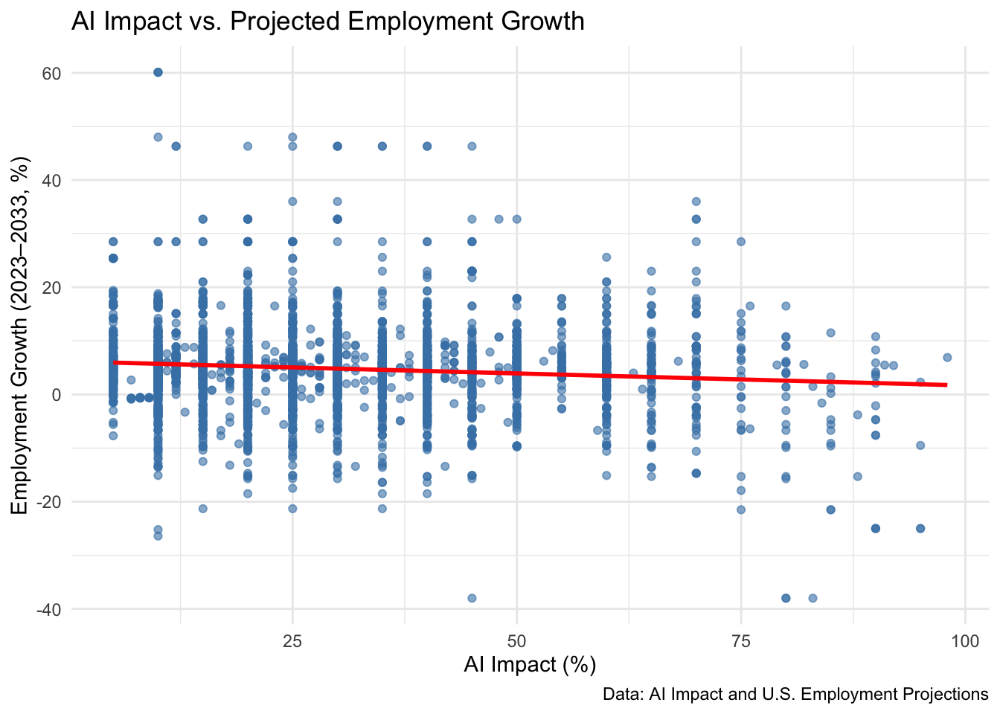

AI Impact and Employment Growth: Mapping the Future of Work
Author
Song Bai
1 Introduction
Artificial Intelligence (AI) is reshaping the modern workforce. This report explores how AI’s projected impact on job tasks correlates with anticipated employment growth or decline over the next decade. Specifically, we ask:
Is there a relationship between AI impact and projected employment growth by occupation, and what does it reveal about the future of work?
2 Data Sources
AI Impact Dataset: Contains AI workload ratios and task information by job title.
Employment Projections Dataset: Includes projected job growth, median wages, and education requirements by occupation.
Both datasets required cleaning and merging based on job titles, which often involved multiple aliases or fuzzy matches.
3 Data Processing
Code
ai =read.csv("~/sta9750-2025-spring/data/cp/my_data.csv")employment =read.csv("~/sta9750-2025-spring/data/cp/employment projections.csv")#library(dplyr)#glimpse(ai)#glimpse(employment)library(dplyr)library(stringr)library(tidyr)# Clean job titlesai <- ai |>mutate(Job.title.clean =str_to_lower(str_trim(Job.titiles)))employment <- employment |>mutate(Occupation.Title.clean =str_to_lower(str_trim(Occupation.Title)))# Occupation.Title contains multiple titles separated by *, we split those:employment <- employment |>separate_rows(Occupation.Title.clean, sep ="\\*") |>mutate(Occupation.Title.clean =str_trim(Occupation.Title.clean))# Use a fuzzy join as exact matches may not work# install.packages("fuzzyjoin")library(fuzzyjoin)combined <-stringdist_inner_join(ai, employment,by =c("Job.title.clean"="Occupation.Title.clean"),method ="jw", max_dist =0.15) # remove helper columnscombined <- combined |>select(-Job.title.clean, -Occupation.Title.clean)
4 AI Impact vs. Projected Employment Growth
To explore the relationship between AI exposure and job market trends, I created a scatter plot comparing the AI Impact (%) of each occupation with its projected employment growth (2023–2033). AI impact scores were converted from percentage strings to numeric values, and employment growth was taken directly from U.S. Bureau of Labor Statistics projections.
Code
library(ggplot2)library(readr)# Convert AI Impact % to numericcombined <- combined |>mutate(AI.Impact.Numeric =as.numeric(str_remove(AI.Impact, "%")),Employment.Growth = Employment.Percent.Change..2023.2033)# Scatter plot: AI impact vs. employment growthggplot(combined, aes(x = AI.Impact.Numeric, y = Employment.Growth)) +geom_point(alpha =0.6, color ="steelblue") +geom_smooth(method ="lm", se =FALSE, color ="red") +labs(title ="AI Impact vs. Projected Employment Growth",x ="AI Impact (%)",y ="Employment Growth (2023–2033, %)",caption ="Data: AI Impact and U.S. Employment Projections") +theme_minimal()

The chart shows a wide dispersion of data points, with no strong visual trend indicating a direct relationship between AI exposure and job growth. The red regression line represents a linear model, which shows only a slight negative slope. This suggests that, on average, occupations with higher AI impact tend to have slightly lower projected growth, but the correlation is weak.
To quantitatively assess the relationship between AI exposure and projected job growth, I conducted a Pearson correlation test between:
combined$AI.Impact.Numeric (AI impact score as a percentage), and
combined$Employment.Growth (projected percent change in employment from 2023 to 2033).
The correlation coefficient is -0.104, indicating a very weak negative correlation between AI impact and employment growth. The p-value < 0.0001 confirms this relationship is statistically significant, meaning the likelihood of observing this pattern by chance is extremely low. However, the magnitude of the correlation is small, suggesting that AI exposure explains very little of the variation in employment growth across occupations.
These results reinforce the earlier visual findings. While AI may play a role in shaping job trajectories, it is not the sole or dominant factor influencing projected employment changes. Some highly impacted jobs are expected to grow — possibly due to AI augmentation rather than replacement.
4.2 Interactive Visualization: AI Impact vs. Employment Growth by Domain
Code
library(ggplot2)library(plotly)# Base ggplotp <-ggplot(combined, aes(x = AI.Impact.Numeric, y = Employment.Growth,color = Domain,text =paste("Job Title:", Job.titiles,"<br>AI Impact:", AI.Impact,"<br>Employment Growth:", Employment.Growth, "%","<br>Domain:", Domain))) +geom_point(alpha =0.7, size =2) +geom_smooth(method ="lm", se =FALSE, color ="black") +labs(title ="AI Impact vs. Employment Growth (Interactive by Domain)",x ="AI Impact (%)",y ="Employment Growth (2023–2033, %)",color ="Occupational Domain" ) +theme_minimal() +theme(legend.position ="bottom")# Convert to interactive plotggplotly(p, tooltip ="text")
To enhance interpretability and user engagement, the scatter plot of AI impact versus projected employment growth was upgraded to an interactive graphic using the plotly library in R. In this version of the chart, each point represents an individual occupation. Points are color-coded by occupational domain, such as Healthcare, IT, or Clerical work. Users can hover over points to reveal job-specific details, including:
Job title
AI impact score (%)
Projected employment growth (%)
Occupational domain
This visualization helps bridge the gap between macro-level insights (e.g., AI is negatively correlated with growth) and micro-level stories (e.g., specific job roles that defy the trend). It supports a richer understanding of how AI may transform work differently across occupational domains.
Code
library(shiny)library(ggplot2)library(plotly)library(dplyr)library(readr)# UIui <-fluidPage(titlePanel("AI Impact vs. Employment Growth Dashboard"),sidebarLayout(sidebarPanel(selectInput("domain", "Select Domain(s):", choices =sort(unique(combined$Domain)), selected =unique(combined$Domain),multiple =TRUE),sliderInput("aiImpact", "AI Impact Range (%)", min =0, max =100, value =c(0, 100)),downloadButton("downloadData", "Download Filtered Data") ),mainPanel(plotlyOutput("interactivePlot", height ="700px") ) ))# Serverserver <-function(input, output) {# Reactive data based on inputs filtered_data <-reactive({ combined %>%filter(Domain %in% input$domain, AI.Impact.Numeric >= input$aiImpact[1], AI.Impact.Numeric <= input$aiImpact[2]) })# Interactive plot output$interactivePlot <-renderPlotly({ p <-ggplot(filtered_data(), aes(x = AI.Impact.Numeric, y = Employment.Growth)) +geom_point(aes(color = Domain, text =paste("Job:", Job.titiles,"<br>AI Impact:", AI.Impact,"<br>Growth:", Employment.Growth, "%","<br>Domain:", Domain )), alpha =0.7, size =2) +geom_smooth(method ="lm", se =FALSE, color ="black") +facet_wrap(~ Domain, scales ="free_y") +labs(title ="AI Impact vs. Employment Growth by Domain",x ="AI Impact (%)",y ="Employment Growth (%)" ) +theme_minimal() +theme(legend.position ="none")ggplotly(p, tooltip ="text") })# Download filtered dataset output$downloadData <-downloadHandler(filename =function() {paste("filtered_ai_employment_data_", Sys.Date(), ".csv", sep ="") },content =function(file) {write.csv(filtered_data(), file, row.names =FALSE) } )}# Run the appshinyApp(ui = ui, server = server)
Shiny applications not supported in static R Markdown documents